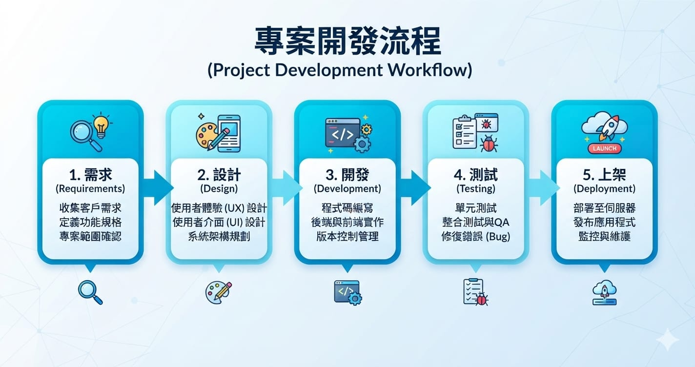

「我想做一個 App，可是……到底要從哪裡開始？」
這大概是每個想踏進 App 開發的人，心裡的第一個問題。網路上資料很多，但東一塊西一塊：這篇教你裝工具、那篇教你寫程式、又有一篇在講上架，看完反而更亂。到底要學什麼、要花多少錢、學了能不能賺錢？
這篇文章就是要幫你把整張地圖攤開來看。我會把做一個 App 會碰到的五件事——開發工具、開發流程、上架商店、費用、賺錢方式——iOS 和 Android 並排講清楚。看完這篇，你會知道自己接下來該往哪走，也是我這個「App 開發完整指南」系列的入口。
先講一句實話：做 App 不難入門，難的是「持續做完」。所以我後面規劃的是一條扎實的系統學習路徑，不是速成班。速成能讓你抄出一個 Demo，但要能自己獨立開發、上架、維護，還是得一步一步打底。
一、開發工具：兩個平台的門檻不一樣
這是很多人第一個踩坑的地方，因為 iOS 有一個硬性前提。
iOS（iPhone）開發需要的東西：
- 一台 Mac（這是硬條件，沒得商量）。Xcode 只能裝在 macOS 上，Windows 和 Linux 都不行。
- Xcode：Apple 官方的開發工具，免費，從 Mac App Store 下載。
- Swift / SwiftUI：Swift 是程式語言，SwiftUI 是拿來刻畫面的框架，都是 Apple 主推的現代做法。
- 一支 iPhone（選配，模擬器也能測，但真機測試更準）。
Android 開發需要的東西：
- 任何一台電腦都行（Windows、Mac、Linux 都可以），門檻低很多。
- Android Studio：Google 官方開發工具，免費。
- Kotlin：Android 現在主推的語言（舊的 Java 也還能用，但新專案建議直接學 Kotlin）。
- Jetpack Compose：Android 版的現代刻畫面框架，概念跟 SwiftUI 很像。
- 一支 Android 手機（選配，同樣有模擬器）。
一句話結論：如果你手上只有 Windows 電腦，想做 iOS 就得先買 Mac；想省錢先動起來，可以先從 Android 入門。這點後面的決策建議會再講。
二、開發流程：兩個平台其實長得一樣
不管做 iOS 還是 Android，一個 App 從無到有的骨架都是同一套：

- 需求：想清楚這個 App 要解決什麼問題、給誰用。這步最常被跳過，也最重要。
- 設計：畫出畫面流程（wireframe），先在紙上或工具裡把每個頁面長怎樣、怎麼跳轉想過一遍。
- 開發：寫程式，把畫面和功能做出來、串上資料和網路。
- 測試：在模擬器和真機上跑，抓 bug，找朋友試用（iOS 用 TestFlight、Android 用內部測試）。
- 上架：準備素材、送審、發布到商店。
好消息是：一旦你在其中一個平台走過完整一輪，換到另一個平台時，流程觀念是共通的，只需要換語言和工具。這也是我建議「先專心學透一個平台，再學第二個」的原因——第二個會快很多。
等等，有沒有「寫一次、兩邊共用」的方法？
看到這裡你可能會想：iOS 要學 Swift、Android 要學 Kotlin，難道得學兩套、寫兩份程式碼嗎？
有一條省力的路，叫跨平台開發——寫一套程式碼，同時打包成 iOS 和 Android 兩個 App。目前主流有三個方案：
- Flutter（Google，用 Dart 語言）：市佔最高，畫面兩邊完全一致，做 UI 精緻的 App 很強。
- React Native（Meta，用 JavaScript）：如果你本來就會網頁前端，上手最快，套件生態最豐富。
- Kotlin Multiplatform（KMP）：共用核心邏輯、畫面各平台仍走原生，適合想保留原生體驗的人。
跨平台的好處是省時、省維護，一個人也能顧兩個平台；代價是遇到深度系統功能還是得寫平台專屬程式碼，體驗偶爾要妥協。
那初學者該走原生還是跨平台？我的建議是先把原生學起來打底。原生是根，懂了原生再用跨平台，你會清楚底層在做什麼、出問題也知道怎麼查；反過來只學跨平台，常常一卡住就不知道發生什麼事。而且跨平台框架幫不了你上架、權限、憑證這些平台基本功——這些還是得懂。所以這個系列會先帶你走原生路徑，另外我也會單獨寫一篇跨平台方案總覽，專門講這三個怎麼選、適合誰。
三、上架商店：App Store vs Google Play
做完 App 要上架，兩邊的規矩差蠻多的：
| 項目 | App Store（iOS） | Google Play（Android） |
|---|---|---|
| 審核嚴格度 | 較嚴，人工審核為主 | 相對寬鬆，自動化較多 |
| 審核時間 | 通常 1~3 天 | 通常數小時到 1~2 天，但新帳號可能更久 |
| 常見退件原因 | 功能不完整、隱私說明不清、山寨感 | 政策違規、權限說明不足、資料安全宣告 |
| 帳號驗證 | 需要 Apple ID + 雙重認證 | 需要 Google 帳號 + 身分驗證 |
簡單說：iOS 審核比較龜毛但規則清楚，Android 上架比較快但政策也要顧好。第一次上架都會緊張，這很正常，後面的上架專篇我會把每個步驟和常見退件拆開講。
四、費用：到底要花多少錢？
這是大家最關心的。我把錢分成「一定要花」和「可能要花」兩種。
查證時間：2026-09-27。以下開發者帳號費用為當日查詢官方頁面的結果，Apple 與 Google 未來可能調整，實際請以官方為準。
一定要花的（開發者帳號）：
- Apple Developer Program：每年 US$99（約新台幣 3,200 元／年，需持續續約才能維持上架）。來源：Apple 官方會員比較頁。
- Google Play 開發者帳號：一次性 US$25（約新台幣 800 元，付一次終身有效，不用年繳）。來源：Google Play 官方說明。
光看帳號費，Android 便宜非常多。
可能要花的（依你的情況）：
- 一台 Mac（做 iOS 才需要）：二手 Mac mini 或 MacBook Air 都能開發，這是 iOS 最大的一筆隱形成本。
- 一支測試用的實機手機（選配）。
- 上架後如果要賺錢，平台會抽成：兩邊大致都是 15%~30%（小型開發者通常適用較低的 15%）。
開發工具本身（Xcode、Android Studio）都是免費的，別擔心軟體要錢。
五、賺錢方式：App 怎麼變現
學會做 App 之後，變現的路其實不少：
- 付費下載：使用者付一次錢才能下載。現在較少見，除非很有特色。
- App 內購買（IAP）：免費下載，裡面賣道具、功能、進階版。手遊最典型。
- 訂閱制：按月或按年收費，適合工具型、內容型 App，是現在最主流的穩定收入模式。
- 廣告：App 裡放廣告，用戶量夠大才有意義（iOS 常用內建機制、Android 常用 Google AdMob）。
- 接案：幫別人做 App。你會開發之後，這是最快變現的方式，不用自己養用戶。
- 企業內部工具：幫公司做內部使用的 App，或把自己工作流程自動化——不一定要上架，但價值很實在。
我自己就開發過一個 iPhone 相片備份 App，深知從「學會」到「做出真正有人用的東西」是一段路。但只要打底扎實，這條路完全走得通。
那，該先學 iOS 還是 Android？
給你一個簡單的判斷：
- 手上只有 Windows 電腦、想先省錢入門 → 先學 Android（不用買 Mac，帳號只要 US$25）。
- 已經有 Mac、或目標用戶多用 iPhone（例如台灣、日本市場） → 先學 iOS。
- 想接案、想兩個平台都吃 → 挑一個先學透，第二個會快很多。實務上先學 iOS 的人轉 Android 通常較順，反之亦然。
不管先學哪個，重點是專心走完一條路徑再開第二條，不要一開始就想兩個一起學，那只會兩邊都學不深。
接下來的學習路徑
這個系列我會先從 iOS 開發開始，拆成一條循序漸進的路徑：
- 開發環境與工具（Mac、Xcode、Apple ID）
- Swift 語言基礎
- 用 SwiftUI 做第一個 App
- 資料儲存與串接網路 API
- 完整上架 App Store 流程
- iOS 賺錢方式實戰
要花多久？ 誠實地說：每天投入 1~2 小時，大約 3~4 個月能走完並做出一個可上架的 App；每天 3~4 小時的話約 6~8 週。這是「能獨立做出並上架中小型 App」的程度，不是精通——精通需要靠一個個真實專案慢慢累積。
iOS 全部寫完後，我會再用對稱的結構寫 Android 開發路徑。學過 iOS 再學 Android 的人，因為觀念相通，時間通常可以減半。另外我也會單獨寫一篇跨平台方案總覽，把 Flutter、React Native、KMP 這三條「一次寫、兩邊共用」的路講清楚，讓你在原生打底之後，知道還有哪些選擇。
想紮實學會做 App、而不是只抄一個 Demo 就停，跟著這個系列一步步走就對了。下一篇，我們從「準備開發環境」開始。🐾
※ 本連結為 Hahow 好學校聯盟連結，連結導向 Hahow 平台（非特定課程頁）；透過它購課我會獲得少許回饋，不影響你的售價。
系列導覽
- 📚 回到 App 開發完整指南 全系列目錄
- ➡️ 下一篇：iOS 開發第一步：環境準備